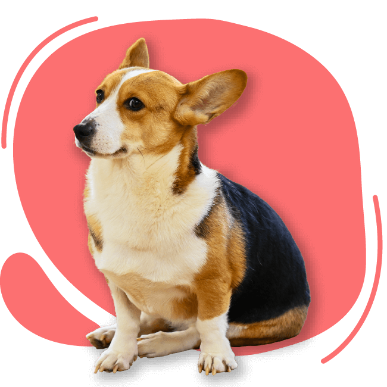
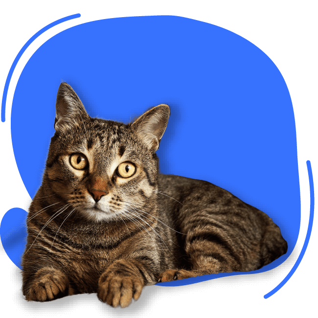

Olá!
Veja os amigos disponíveis para adoção!

Dunga
2 anos
Porte pequeno
Calmo e educado
Rio de Janeiro (RJ)
Falar com responsável

Felícia
3 meses
Porte pequeno
Ativa e carinhosa
Nova Iguaçu (RJ)
Falar com responsável

Sirius
6 meses
Porte grande
Ativo e educado
Duque de Caxias (RJ)
Falar com responsável

Fiona
3 anos
Porte pequeno
Calma e carinhosa
São Gonçalo (RJ)
Falar com responsável

Sid
8 meses
Porte médio/grande
Brincalhão e amável
Rio de Janeiro (RJ)
Falar com responsável

Yoda
1 ano
Porte médio
Ativo e carinhoso
Nova Iguaçu (RJ)
Falar com responsável

Lua
6 meses
Porte médio
Ativa e carinhosa
Duque de Caxias (RJ)
Falar com responsável

Amora
45 dias
Porte grande
Calma e carinhosa
São Gonçalo (RJ)
Falar com responsável

Zelda
5 meses
Porte médio
Ativa e amável
Rio de Janeiro (RJ)
Falar com responsável